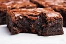
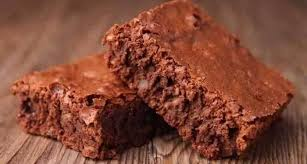

- O que é?
- Origem
- Características do Brownie
O brownie é uma sobremesa deliciosa e muito apreciada em todo o mundo. Originado nos Estados Unidos, o brownie é um tipo de bolo de chocolate denso e úmido, com uma textura irresistível e sabor marcante.A palavra “brownie” vem do inglês e significa “marrom”. Isso se deve ao fato de que a parte externa do bolo fica mais escura enquanto o interior se mantém úmido e macio.
A origem do brownie remonta ao século XIX, nos Estados Unidos. Existem diversas teorias sobre sua criação, mas a mais aceita é de que tenha sido um acidente culinário. Conta-se que um chef esqueceu de adicionar fermento a uma receita de bolo de chocolate, resultando em uma sobremesa densa e cremosa. A partir desse incidente, o brownie foi aperfeiçoado e ganhou popularidade, tornando-se uma das sobremesas mais queridas do país.

O brownie é reconhecido por sua textura densa e úmida, com uma casquinha crocante por fora. Sua cor varia entre o marrom claro e o marrom escuro, devido à quantidade de cacau utilizado na receita. Os ingredientes básicos do brownie incluem chocolate, manteiga, açúcar, ovos e farinha de trigo. O tipo de chocolate utilizado pode variar, desde o chocolate amargo até o chocolate ao leite, conferindo diferentes intensidades de sabor.
